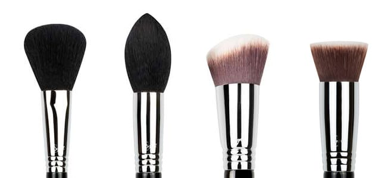

Corte Del Pelo

Como comprobarás, el pelo de las brochas presenta diversos cortes, pensados para diferentes funciones:
Brochas de corte redondo, en punta, biselado y plano
Brochas de corte plano: se utilizan sobre todo para aplicar polvos y bases en todo el rostro, tanto fluidas como compactas. Permiten un acabado uniforme y natural porque atrapan mucha cantidad de producto y lo van soltando de manera equitativa, permitiéndonos incluso difuminar.
Brochas de corte redondeado: permiten cierta precisión a la hora de aplicar el maquillaje y atrapan menor cantidad que las de corte plano. Sirven por ejemplo para aplicar colorete en las manzanas de las mejillas, aunque también, para aplicar todo tipo de polvos sobre el rostro
Brochas en punta: permiten atrapar menos producto y aplicarlo de forma más precisa. Se utilizan por ejemplo a la hora de aplicar correctores y contornos o, si son pinceles de ojos, para aplicar tonos oscuros bajo la banana o definir la «V» externa.
Brochas de corte biselado: el corte en diagonal se adapta a las formas peculiares de nuestro rostro. Se utiliza para cubrir zonas que nos son planas, como los pómulos o la parte de la banana del ojo, y aplicar el producto de un modo más difuminado.
Además, encontrarás brochas singulares como la que tiene forma de abanico, pensada para aplicar ligeros toques de maquillaje polvo o polvos traslúcidos, o el «coupillon» para las máscaras de pestañas.
Volver a la Página Principal